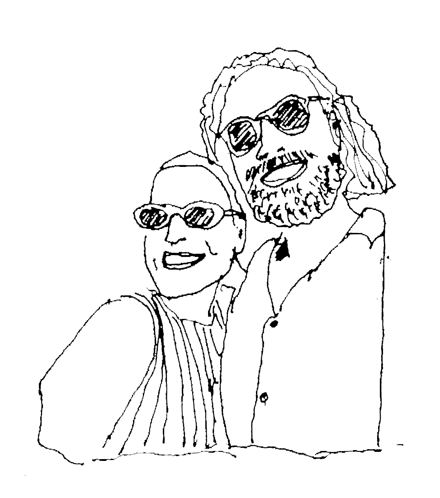
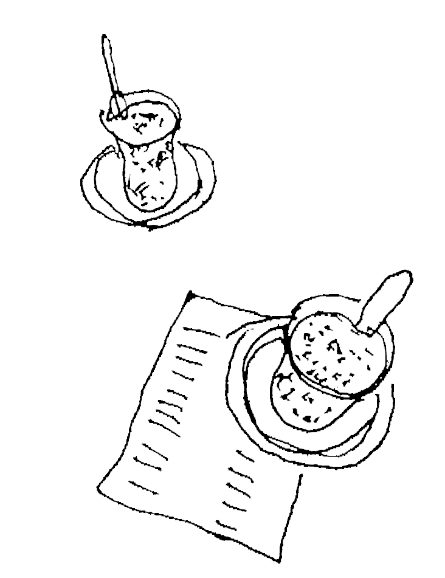

Istanbul · 24. Oktober 2026
Falsches Passwort. Bitte erneut versuchen.
Liebe/r [Name],
wir freuen uns, am 24. Oktober 2026 mit euch unsere Hochzeit in Istanbul zu feiern! Es geht um 19:00 Uhr im Pera Palace Hotel in Beyoğlu los. Nach dem Cocktailempfang auf den Spuren der Orient-Express-Passagiere folgt unsere Trauzeremonie – danach erwarten euch ein tolles Abendessen und türkische Pop-Klassiker zum Tanzen.
Für eine schöne Zeit in Istanbul haben wir eine Liste mit Aktivitäten sowie unsere persönlichen Restaurant- und Bar-Empfehlungen zusammengestellt. Alle Infos findet ihr hier.
Bis bald in Istanbul!
Eure Merve und Philipp
RSVP: Bitte gebt uns bis zum 15. August 2026 Bescheid, ob ihr kommt.
Reisehinweis: Im Oktober sind in einigen Bundesländern Herbstferien – bitte Flüge frühzeitig buchen!

Die Feier findet im Pera Palace Hotel in Beyoğlu statt – einem der bekanntesten Hotels Istanbuls, das 1892 eigens für Reisende des Orient-Express erbaut wurde.
Fun Facts: Agatha Christie schrieb ihren Roman Mord im Orient-Express in Zimmer 411 dieses Hotels. Die Netflix-Serie Mitternacht im Pera Palace spielt genau hier.
Wer sich etwas Besonderes gönnen möchte, kann direkt im Pera Palace Hotel übernachten. Ansonsten gibt es viele Hotels und Airbnbs in fußläufiger Entfernung.
Empfehlungen in der Nähe:
Formal – "We invite you to dress up"
Wir freuen uns auf Anzüge und lange Kleider.
Istanbul ist groß und lebendig. Setzt euch nicht unter Druck, alles sehen zu müssen – erkundet am besten ein bis zwei Viertel pro Tag.

Zur Rushhour herrscht starker Verkehr. Die Fähre ist die entspannteste Transportmöglichkeit – mit dem besten Ausblick auf die Stadt.
Ihr könnt die Uber-App nutzen – es kommen ganz normale gelbe Taxis.
Für den ÖPNV kauft eine Istanbul Kart oder nutzt eure Kreditkarte kontaktlos – die Istanbul Kart ist meist zuverlässiger.
In den meisten Restaurants und Läden akzeptiert man Kreditkarten. Bargeld braucht ihr für Streetfood, Çay-Gärten und Trinkgeld.
Wir empfehlen eine eSIM vorab zu kaufen, z.B. über die App Mobimatter.
Für lokale Empfehlungen schaut bei @kisnisvesaire und @oitheblog vorbei.
Wenn ihr nur wenig Zeit habt, empfehlen wir, bald wieder zu kommen – Istanbul lässt sich nicht an einem Wochenende erkunden. Unsere Empfehlungen konzentrieren sich auf die Gegend rund ums Goldene Horn, Pera und die historische Altstadt.
Laut, belebt und voller Menschen – aber mit den absoluten Klassikern der Stadt.
Sehenswürdigkeiten
Hagia Sophia, Topkapı-Palast, Blaue Moschee, Süleymaniye-Moschee, Gewürzbasar, Großer Basar.
Hamam
Cağaloğlu Hamamı oder Zeyrek Çinili Hamamı – vorab buchen!
Essen
Nachtisch
Hatay Asi Künefeleri im Großen Basar – warmes Kadaifi-Dessert mit Käse und Sirup. Dazu einen türkischen Çay trinken.
Galata hat enge Gassen, einen Turm aus dem 14. Jahrhundert und schöne Cafés. Karaköy ist ein Hafenviertel mit hippen Lokalen und traditionellen Bäckereien.
Sehenswürdigkeiten
Galata-Turm, Pera Palace Hotel, Istanbul Modern.
Cafés
Norre, Müz, Le Oba. Merve & Philipps Lieblings-Çay-Ort: Kahveci Mustafa Amca Jeans.
Restaurants (für Mezze bitte vorab reservieren)
Bar
Geyik
Ein lebendiges Viertel mit Stores, Cafés, Restaurants und Bars – sonntags kann man hier gut shoppen.
Cafés
Petra Topağacı
Restaurants
Lips Wine Bar, Ahali Teşvikiye, Mahir Lokantası (ideal zum Mittagessen – İçli Köfte und Lahmacun probieren).
Cocktails & Nightlife
Efendi – Merves Lieblingsbar. Klein, gemütlich, türkische Pop-Hymnen. Lieblings-Cocktail: Serendipity.
Mit der Fähre auf die asiatische Seite – normaler ÖPNV-Preis, mit Blick auf Topkapı-Palast und die europäische Skyline. Moda ist ein Küstenviertel mit Cafés und Läden.
Café
Moda Çay Bahçesi – Schöner Ausblick, ideal zum Tee trinken.
Restaurant
Çiya – Traditionelle türkische Spezialitäten zu fairen Preisen, mit eigener Netflix Chef's Table-Folge. Unbedingt probieren: İçli Köfte, Stuffed Dried Aubergine Dolma, Perde Pilavı.
Bars
arkaoda, bina
Nachtisch
Baylan – das Kup Griye (Eis mit Krokant) ist einen Besuch wert.
Fahrt mit dem Schiff den Bosporus hinauf – normaler ÖPNV-Ticketpreis. Von Eminönü bis Emirgan ca. 1 Stunde 15 Minuten.
Bitte gebt uns bis zum 15. August 2026 Bescheid, ob ihr kommt. Meldet euch einfach direkt bei uns!
Bitte gebt uns bis zum 15. August 2026 Bescheid, ob ihr kommt. Meldet euch einfach direkt bei uns!
Wann soll ich meine Flüge buchen?
So früh wie möglich! Im Oktober sind in einigen Bundesländern Herbstferien, was die Preise treiben kann.
Brauche ich ein Visum für die Türkei?
Bürger der EU können in der Regel ohne Visum oder mit Ankunftsvisum einreisen. Bitte prüft die aktuellen Einreisebestimmungen für euer Land.
Welche Währung wird in der Türkei verwendet?
Türkische Lira (TRY). In den meisten Restaurants und Läden kann man mit Kreditkarte zahlen. Bargeld ist für Streetfood, Çay-Gärten und Trinkgeld praktisch.